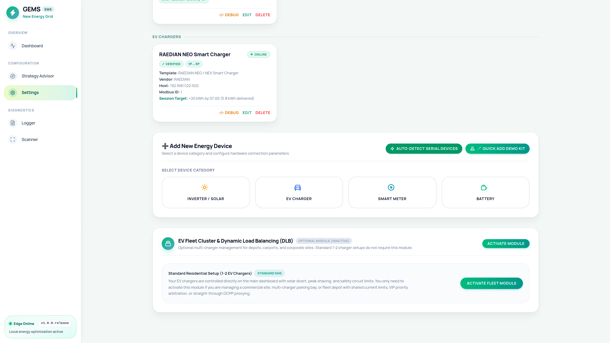
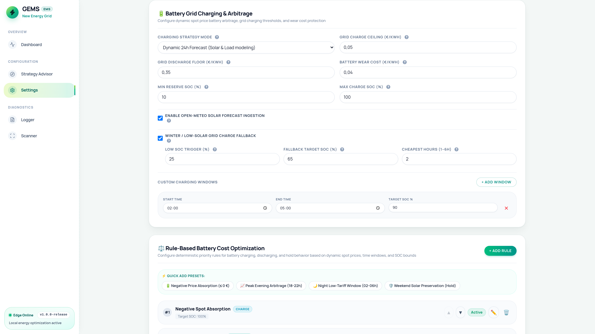

Manuel de Mise en Service Huawei SUN2000, LUNA2000 & FusionSolar
Manuel de terrain complet détaillant chaque paramètre à configurer dans l'application Huawei FusionSolar (SDongleA-05, EMMA-A02, LUNA2000-S0/S1 et contrôle de puissance active) ainsi que le paramétrage optimal de GEMS pour l'écrêtage de pointe, l'autoconsommation solaire et l'arbitrage tarifaire Day-Ahead.
1. Écosystème Huawei pris en charge & topologies de connexion
GEMS exécute toutes les lectures de télémétrie, les consignes de charge/décharge LUNA2000 et le bridage solaire localement sur votre réseau LAN ou bus RS-485, tout en préservant le suivi cloud habituel sur FusionSolar.
| Topologie | Connexion physique | Recommandation de terrain |
|---|---|---|
| Topologie A : SDongleA-05 (WLAN-FE) | Branchez un câble Ethernet RJ45 à l'intérieur du boîtier SDongleA-05. GEMS se connecte au port TCP 502 (Modbus ID 1). Associez-le à un compteur intelligent USB P1 sur GEMS. |
Standard de référence recommandé. Privilégiez toujours l'Ethernet filaire sur le SDongleA-05 plutôt que le Wi-Fi 2,4 GHz pour éliminer la gigue et les délais d'expiration sans fil. |
| Topologie B : Huawei EMMA-A02 | Connectez l'EMMA-A02 en Ethernet au réseau LAN. Intégrez à la fois huawei_emma (compteur) et huawei_inverter (Slave ID 1) pointant vers l'IP de l'EMMA sur le port 502. |
Idéal pour les sites LUNA2000-S1 / MAP0 / MB0. GEMS multiplexe proprement les deux équipements sur une seule connexion TCP mutualisée. |
| Topologie C : Liaison directe USB vers RS-485 | Câble paire torsadée blindée (9600 bps, 8N1, Slave ID 1) depuis l'adaptateur USB-RS485 GEMS vers le port COM du SUN2000 (L1 : Broche 2=A+, Broche 1=B- ; M1 : Broche 1=A+, Broche 3=B-). |
Uniquement lorsqu'AUCUN SDongleA-05 ou EMMA-A02 n'est installé (un dongle installé prend le contrôle maître du bus RS-485 interne). |
| Topologie D : LUNA2000 pilotée par P1 (sans EMMA ni compteur Huawei) | SUN2000 + LUNA2000 sans DTSU666-H ni EMMA, couplés à un compteur communicant P1 sur GEMS (Grid Meter Connected? = Décoché). |
GEMS pilote activement la charge solaire, la décharge sur les charges domestiques et l'arbitrage tarifaire de la LUNA2000 à partir des mesures P1. Laissez Charge from AC = Enable dans FusionSolar ; si le mode d'autoconsommation est indisponible sans capteur Huawei, sélectionnez Fixed Charge/Discharge (0 plage horaire). |
2. Versions de micrologiciel & règles réseau obligatoires
- Versions minimales de firmware : Vérifiez que le
SDongleA-05exécute au minimumV100R001C00SPC126ouV200R022C10SPC108+(recommandéV200R022C10SPC118+), leSUN2000-L1SPC130+, leSUN2000-M1SPC153+, laLUNA2000SPC119+ / SPC624+et l'EMMA-A02V100R023C10SPC100+. - Règle du maître Modbus TCP unique : Le
SDongleA-05comme l'EMMA-A02n'acceptent qu'un seul client TCP simultané sur le port 502. Arrêtez tout script externe secondaire ou toute borne interrogeant directement le dongle avant de connecter GEMS. - Réservations IPv4 statiques / DHCP : Fixez les adresses IPv4 de votre contrôleur GEMS et du module Huawei
SDongleA-05/EMMA-A02dans la table DHCP de votre routeur.
3. Paramétrage étape par étape dans l'application Huawei FusionSolar
3.1 Activer Modbus TCP sur le SDongleA-05
- Accédez à
Settings → Communication Configuration → Dongle Parameter Settings → Modbus-TCP. - Passez Connection sur
Enable (unrestricted)(ou Enable (restricted) renseigné avec l'adresse IPv4 statique de votre unité GEMS) et appuyez sur Confirm. - Sous
Settings → Communication Configuration → RS485_1, vérifiez que Protocol =MODBUS, Baud Rate =9600et relevez la valeur Communication Address (1par défaut). - Alternative via le portail Web à distance : Connectez-vous sur FusionSolar Web en tant qu'Installateur → Plants → Device Management → Sélectionner SDongle → Configuration → Connection Parameters → Modbus TCP → Enable (unrestricted).
3.2 Activer Modbus TCP sur le Huawei EMMA-A02
- Connectez-vous à l'EMMA-A02 via Device Commissioning en tant qu'Installateur.
- Accédez à
Settings → Communication Configuration → Modbus TCP. - Réglez Connection =
Enableet TLS Encryption =Disable (OFF). - Définissez Client IP Address sur l'adresse IPv4 statique exacte de votre contrôleur GEMS (par ex.
192.168.1.50). Ne saisissez jamais0.0.0.0— l'EMMA-A02 refuse les adresses génériques ! - Laissez le planificateur cloud IA / Heures Creuses propre à l'EMMA Désactivé (Disabled) et maintenez la batterie sur Maximum Self-Consumption.
3.3 Liste complète des paramètres batterie LUNA2000 & puissance active dans FusionSolar
Sous Settings → Energy Control et Settings → Power Adjustment → Active Power Control, vérifiez chacun des paramètres suivants :
| Paramètre FusionSolar | Valeur requise | Raison technique |
|---|---|---|
| Working Mode | Maximum Self-Consumption |
Mode autonome de base restauré automatiquement dès que GEMS relâche une consigne active de charge ou décharge forcée. Ne choisissez jamais Time-of-Use (TOU) afin d'éviter tout conflit d'horloge avec GEMS. |
| Charge from AC | Enable |
Autorise GEMS à déclencher la recharge réseau lors des prix spot bas/négatifs et le secours hivernal (ne provoque aucune charge réseau spontanée en autoconsommation normale). |
| Grid Charge Cutoff SOC | 100 % |
Garantit que le firmware Huawei n'empêche jamais GEMS d'atteindre 95 %–100 % de SOC pendant les heures à prix négatifs. |
| Max Charge / Discharge Power | Puissance nominale max. (2500 / 5000 / 10500 W) |
Offre toute la puissance disponible pour capter le surplus PV et écrêter instantanément les pointes quart-horaires en Flandre. |
| End-of-Charge SOC | 100 % |
Indispensable pour l'équilibrage haut périodique des cellules LiFePO4 et la calibration précise du SOC BMS. |
| End-of-Discharge SOC | 5 % – 10 % (Standard)15 % – 20 % (Backup Box) |
Réglez 5 % en été, 10 % en hiver, ou 15 %–20 % en présence d'une Backup Box / SmartGuard Huawei. |
| Active Power Control Mode | Unlimited (No Limit) |
Évitez le zéro-export statique dans FusionSolar afin que GEMS puisse injecter pendant les heures rentables / certificats verts et ne brider dynamiquement que lors des prix nets négatifs. |
| Closed-Loop Controller | Inverter (Simple) / SDongle (Cascade) |
Sélectionnez Inverter sur les sites mono-onduleur pour une régulation matérielle inférieure à la seconde ; choisissez SDongle / SmartLogger uniquement en cascade multi-onduleurs. |
4. Intégration du matériel Huawei dans GEMS
Déverrouillez le Mode installateur certifié via l'icône de cadenas 🔒 dans Paramètres, intégrez d'abord votre compteur principal (P1 Serial Meter ou Huawei EMMA-A02), puis ajoutez l'onduleur sous Paramètres → Appareils → Inverter / Solar → Huawei Hybrid Inverter :


- Adresse IP / Port TCP / Modbus ID : Renseignez l'IP statique de votre SDongleA-05 ou EMMA-A02, le port
502et le Modbus ID1(pour des onduleurs en cascade, ajoutez un second appareil avec le Modbus ID2). - Puissance nominale (Rated Power kW) & Allow Curtailment : Indiquez la puissance AC exacte de la plaque signalétique (par ex.
4.6,5.0,10.0) et cochez Allow Curtailment afin que GEMS puisse appliquer des consignes d'écrêtement d'une finesse de0,1 %. - Intervalle d'interrogation (Poll Interval) : Conservez la valeur pré-sélectionnée de
10 secondessur unSDongleA-05(utilisez5 secondesuniquement sur unEMMA-A02filaire ou en RS-485 direct). - Grid Meter Connected? : Cochez ✓ dès qu'un compteur Huawei
DTSU666-H,DDSU666-HouEMMA-A02est raccordé au système Huawei. Ne décochez cette case que lorsque vous fonctionnez sans capteur Huawei afin que GEMS pilote l'autoconsommation de la LUNA2000 à partir de votre compteur P1. - Battery Connected? & Capacity (kWh) : Cochez ✓ et saisissez la capacité utile totale de la LUNA2000 (par ex.
5.0,10.0,15.0,6.9,13.8,20.7kWh).
5. Configuration optimale de la stratégie GEMS


- Localisation & Prévision solaire (
Paramètres → Stratégie) : Définissez le fuseau horaire (Time Zone), cliquez sur Lookup Lat/Lon avec l'adresse du site et activez Open-Meteo Solar Forecast Ingestion pour éviter toute recharge nocturne inutile avant une matinée ensoleillée. - Mode régional :
- Flandre :
Flanders Mode (Peak Shaving),Capacity Peak Limit = 2.5 kW(ou3.0–3.5 kWavec pompe à chaleur + VE),Peak Shaving Buffer = 200 W(250 Wsur SDongle Wi-Fi),Ramp-up Hysteresis = 500 W, ainsi que le montant exact de vos certificats verts flamands GSC (€0,€250,€350,€450). - Pays-Bas :
Netherlands Mode (Smart Saldering)+Active Inverter Curtailmentà0.00 €/kWh. - Tarif fixe / bi-horaire :
Eco (Max Self-Consumption).
- Flandre :
- Arbitrage & longévité LUNA2000 : Sélectionnez votre contrat fournisseur sous Paramètres → Contrat d'énergie, puis réglez Charging Strategy Mode =
Dynamic 24h Forecast, Battery Wear Cost =0.04 €/kWh(évite le micro-cyclage non rentable), Grid Charge Ceiling =0.08 €/kWh, Grid Discharge Floor =0.35 €/kWhet activez Winter / Low-Solar Grid Charge Fallback (Trigger 25%→Target 65%sur les2–3 heures les moins chères).
5.4 Coordonner une borne VE (Raedian) sans vider la batterie LUNA2000
Intégrez votre borne de recharge (telle qu'une Raedian NEO / NEX / Gemini) directement dans GEMS en Modbus TCP. En journée, sélectionnez PV Only ou Eco pour charger au surplus solaire. Si vous rechargez votre véhicule pendant les heures creuses nocturnes et souhaitez conserver l'énergie de votre LUNA2000 pour la pointe matinale du foyer, ajoutez une règle sous Optimisation Batterie par Règles Tarifaires avec Action = Hold (Idle / No Export) couvrant votre créneau de charge VE nocturne (par ex. 01:00 – 05:00).
6. Référence rapide de dépannage
| Symptôme | Cause probable | Solution |
|---|---|---|
Connection refused / TCP RST sur :502 |
Modbus TCP désactivé, ou TLS actif / IP client erronée sur EMMA-A02 | Réglez SDongle sur Modbus-TCP = Enable (unrestricted) ; sur EMMA-A02, désactivez TLS et autorisez l'IPv4 statique exacte de GEMS (jamais 0.0.0.0). |
Coupures intermittentes i/o timeout / request timed out / server device busy |
Second maître Modbus sur le port 502, Wi-Fi faible ou Poll < 8s |
Arrêtez les autres clients Modbus, branchez un câble Ethernet RJ45 dans le SDongleA-05 et maintenez l'intervalle d'interrogation GEMS à 10s. |
La LUNA2000 ignore la charge réseau forcée ou affiche server device failure |
Charge from AC désactivé dans FusionSolar, Topologie D sans compteur verrouillée sur un mode exigeant un capteur, ou firmware SDongle ancien |
Activez Charge from AC, réglez Grid Charge Cutoff SOC = 100%, décochez Grid Meter Connected? dans GEMS lorsqu'aucun compteur Huawei n'est câblé (en choisissant Fixed Charge/Discharge avec 0 plage si FusionSolar bloque l'autoconsommation) et mettez à jour le SDongle. |
| La batterie se recharge quand la consommation maison augmente | Pinces CT du DTSU666-H inversées ou phases croisées |
Orientez les flèches des tores CT (K → L) dans le sens Réseau → Maison et vérifiez la correspondance des phases tension/courant. |